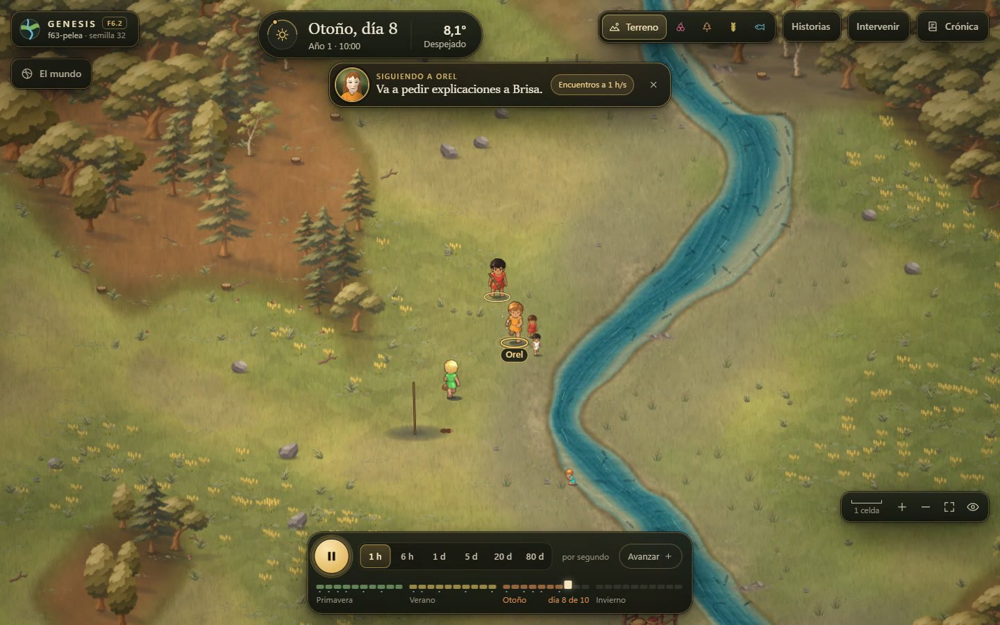
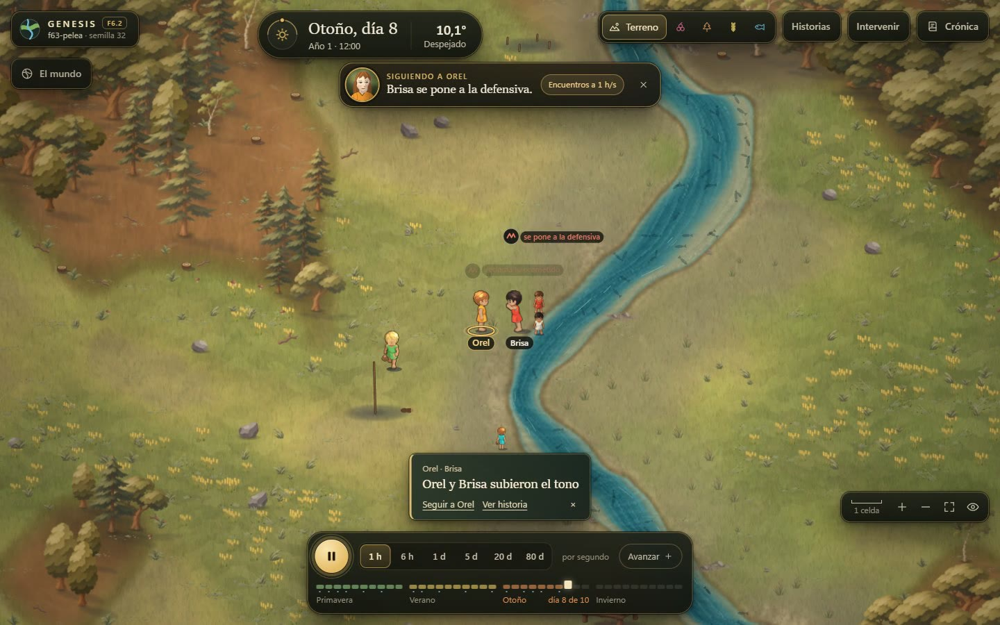
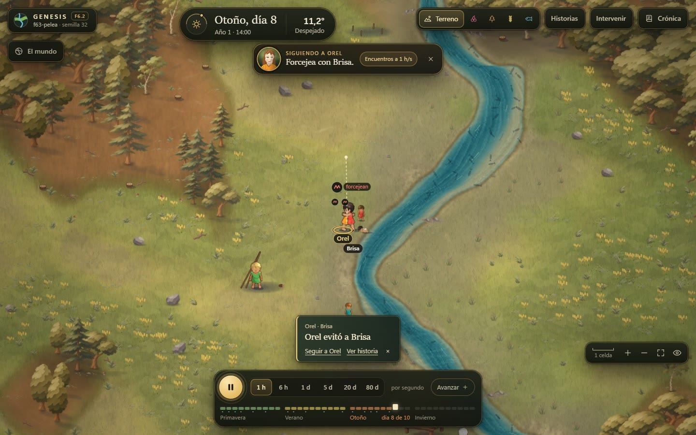
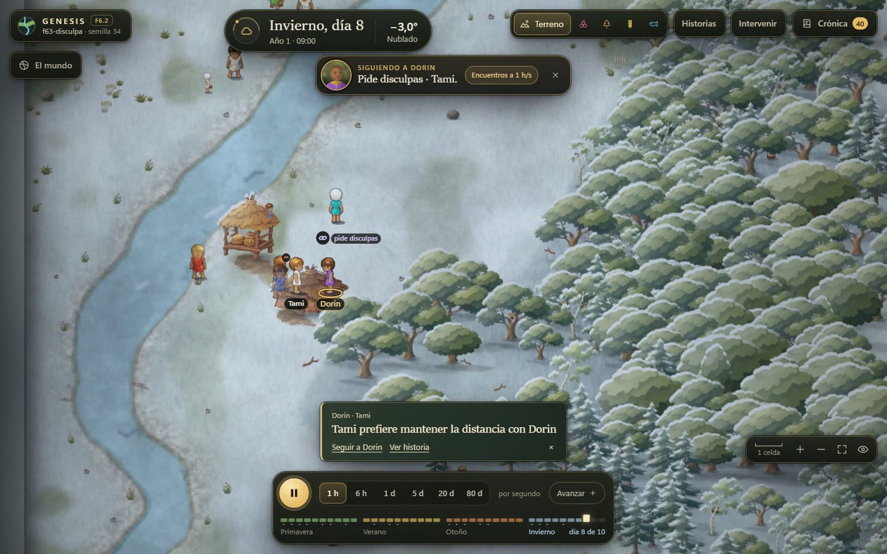
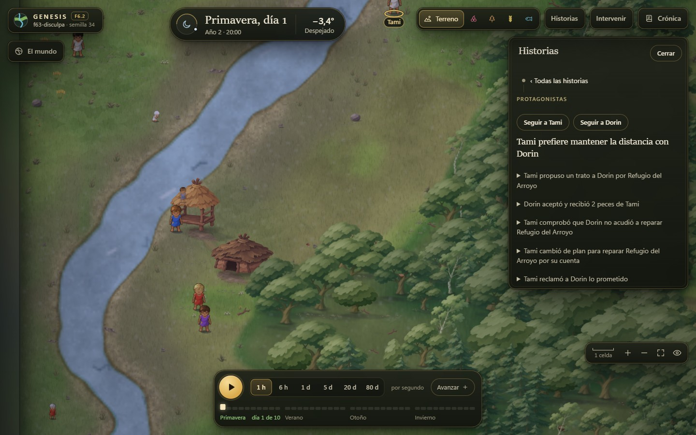
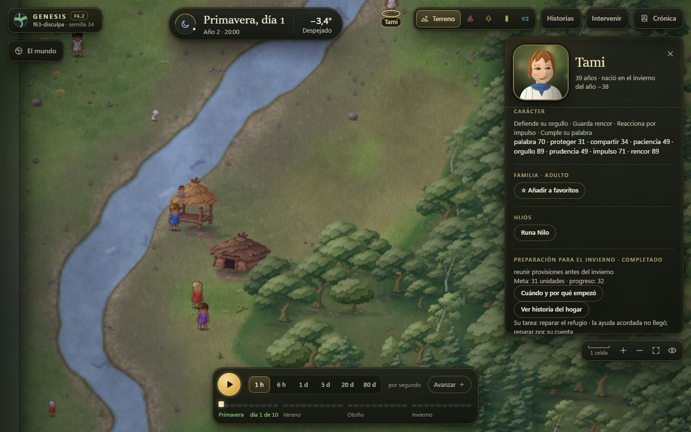
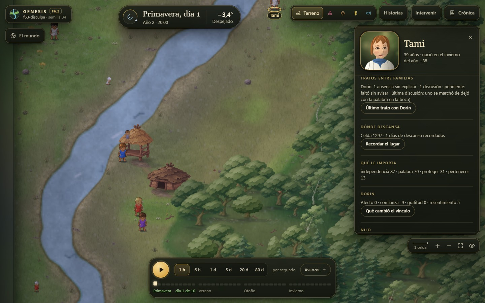

Las imágenes y vídeos se cargan desde la carpeta genesis-evidencias, junto al proyecto. Ver los archivos en GitHub.
Personalidad, conflictos y peleas
Todo lo que se ve son hechos del motor, sin modelo local ni intervenciones. Los dos clips salen de partidas libres (25 fundadores, reglas actuales con F6.3), a tamaño normal (44 px por celda, 1440 × 900), a 1 hora por segundo, con la ficha cerrada. La tabla de abajo es una escena preparada: misma situación y distintos caracteres.
Una pelea que surge sola · semilla 32, horas 654–664
Orel (#8) adelantó 2 peces a Brisa (#13) en la hora 558 para que le ayudara a reparar su refugio. Brisa no fue: cuidaba de un menor de su familia, y Orel no lo sabía. Orel es orgulloso, impaciente, guarda lo suyo y reacciona por impulso. Brisa defiende su orgullo. Cuando Orel la ve, va a pedirle explicaciones (hora 659) y le reclama lo prometido delante de otra persona. Brisa se pone a la defensiva (le cuenta lo del menor, pero de malos modos). Suben el tono (660), forcejean un momento (661, salud −30 y −40) y Brisa se suelta y se aparta (662). Después cada uno se va por su lado y Orel la evita. Zael (#9) lo vio todo desde cerca y en la hora 685 se lo contó a Rudo, de la familia de Orel (fuente: lo que vio Zael).



El encuentro posterior · semilla 34, horas 870–903
Dorin (#13) falta al trato con Tami (#25). Tami se lo reclama en la hora 876 y Dorin, que es prudente y nada orgulloso, se marcha sin contestar. Veinte horas después, cuando el enfado inmediato ya ha pasado, Dorin va a pedirle disculpas (896). Tami, que guarda rencor y defiende su orgullo, prefiere mantener la distancia. Los dos se acuerdan: él vuelve a buscarla, ella no le perdona todavía.




Mismo contratiempo, distintos caracteres (escena preparada)
Unai adelanta 2 peces a Brisa para que repare su refugio mañana; el menor de Brisa enferma lejos del refugio hasta el plazo. Iguales en todos los casos: el refugio, las reservas, el contratiempo y los momentos en que se cruzan. Solo cambian los rasgos de una persona (la otra queda en término medio). La última columna es lo que decide Unai dos días después, ante Brisa y Olin (de otro hogar). Datos completos en comparacion.json.
| Quién cambia | Lo que hace durante el contratiempo | Cuando se encuentran | Dos días después |
|---|---|---|---|
| Nadie (término medio) | Brisa no avisa; Unai ve que cuida del menor | Reclama, Brisa explica, «lo entiende» | Adelanto a Brisa · le da otra oportunidad |
| Brisa protectora y paciente | Va a avisar y pide un día más; Unai mantiene el plazo | Reclama; Brisa se disculpa; acepta. Brisa repara tarde y Unai lo ve | Adelanto a Brisa · avisó, tardó un día y cumplió |
| Brisa protectora e impulsiva | No avisa: se vuelca en el menor | Se pone a la defensiva → suben el tono → forcejeo; días después pide disculpas y Unai mantiene la distancia | Pacta con Olin |
| Brisa responsable y orgullosa | Repara aunque sea tarde; Unai lo cuenta como retraso y vuelve a confiar; el segundo trato también falla | Se disculpa; Unai acepta | Pacta con Olin · ya van dos |
| Los dos protectores y pacientes | Brisa avisa; Unai le da un día más (el plazo pasa de la hora 524 a la 548) | Brisa cumple dentro de la prórroga | Adelanto · cumplió con retraso |
| Unai rencoroso y contenido | — | Se ahorra la discusión, pero no lo olvida | Pacta con Olin (garantía: no le conoce) |
| Unai directo y conciliador | — | Reclama, escucha la explicación y propone una salida | Adelanto a Brisa · otra oportunidad |
| Unai reservado y práctico | — | No reclama nada: su familia ya lo arregla | Garantía a Brisa |
| Unai generoso y prudente | — | Le da otra oportunidad sin discutir | Garantía a Brisa: que repare primero |
| Unai protector y paciente | — | Le da otra oportunidad sin discutir | Garantía a Brisa: que repare primero |
Lo que cambia el recuerdo
- Partida libre, semilla 5, hora 728 (Leva y Hesk): con su recuerdo, Leva adelanta 2 peces a Hesk porque cumplió antes. La causa es el suceso 4714 (Hesk reparó el Refugio del Abedul), que Leva vio en el refugio. Con ese recuerdo oculto y todo lo demás igual, Leva le pide garantía («aún no le conoce»). En la primera ocasión (hora 654), sin historia, también pidió garantía: es muy prudente.
- Escena preparada: tras el forcejeo con Brisa, Unai pacta con Olin. Si se le quita el recuerdo de ese forcejeo y del vínculo con Brisa, vuelve a pactar con Brisa.